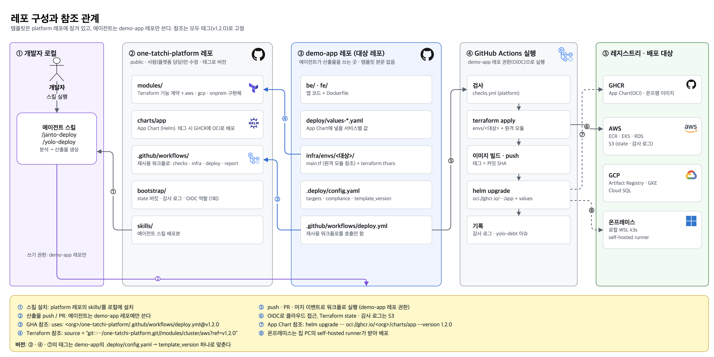

원터치 배포 시스템 설계 문서
에이전트 스킬로 배포 방식을 고르고, CI/CD가 컴플라이언스 규칙에 맞춰 배포한다
| 상태 | 초안 (팀 리뷰 중) |
|---|---|
| 작성 | 원가연 |
| 리뷰 방법 | 섹션 번호를 붙여 코멘트 (예: "6.2 테스트 슬롯 개수 이견") |
1. 개요
로컬에서 개발한 웹 애플리케이션을 AI 에이전트가 분석해 배포 산출물(Dockerfile, 배포 설정, 인프라 변수, 워크플로)을 만들고, GitHub Actions 기반 배포 파이프라인이 컴플라이언스 검사를 통과한 변경만 클라우드(AWS, GCP)와 온프레미스에 반영하는 시스템이다.
- 진입점은 두 개다.
/janto-deploy(ちゃんと)는 정석 경로로, 기능 브랜치 →mainPR → 사람 리뷰·머지 → 테스트 → 운영 순서를 따른다./yolo-deploy는 예외 경로로, 리뷰 없이yolo/*브랜치에서 바로 테스트 환경까지 간다. - yolo는 스킬 실행 한 번으로 테스트 환경까지 원터치이고, 검사가 실패하면 AI가 고쳐 다시 push한다(최대 3회). 컴플라이언스 검사는 어떤 경우에도 생략할 수 없다.
- 운영 관문은 규제 여부가 정한다. 규제 대상 서비스는 모드와 관계없이 운영 승격에 사람 승인이 필요하다. 규제 대상이 아니면 yolo는 운영까지 자동으로 가고, 대신 yolo 배포 리포트(누가·언제·무엇을·어떤 문제를 안고 배포했는지)를 반드시 남긴다.
- 배포 후에는 AI가 지표를 보고 승격·롤백을 판단한다. 배포 이후의 모니터링까지 원터치로 만든다.
- 인프라는 기능 단위 계약과 벤더별 구현체로 추상화한다. 앱은 모든 배포 대상에서 같은 배포 정의(App Chart)로 올라간다.
2. 배경과 문제 정의
2.1 대회 주제 해석
테마: 로컬에서 개발한 웹 애플리케이션을 AI로 원터치 배포. AI를 전적으로 활용해 Google Cloud, AWS 같은 하이퍼스케일러나 온프레미스(로컬) 환경으로 쉽게 배포할 수 있는 시스템을 만든다.
- 만들 대상은 특정 앱이 아니라 어떤 웹 서비스든 배포되게 하는 시스템이다. 데모 앱은 시스템을 보여 주기 위한 재료다.
- 심사 대상인 "아키텍처"는 배포 흐름 자체다. 정적분석 → 테스트 → 배포 → 롤백으로 이어지는 CI/CD 구조를 뜻한다.
- "AI로 쉽게 배포"는 다수 팀이 제안할 방향이다. 차별점은 이식성(같은 정의로 클라우드와 온프레미스를 오감)과 컴플라이언스(AI도 생략할 수 없는 관문)에 둔다.
2.2 문제
| 문제 | 설명 |
|---|---|
| 규제가 배포 위치를 결정한다 | 금융권은 인증·신고 요건 때문에 클라우드 사용이 어렵고, 결제 처리(예: PayPay)는 온프레미스가 요구되는 경우가 있다. 규제가 바뀌면 배포 위치도 바뀌어야 한다. |
| 벤더 종속 | 클라우드 서비스는 벤더 간 1:1로 대응하지 않는다(예: 같은 이름의 VM 옵션이 다르게 동작). 특정 벤더 기능에 묶이면 출구가 없다. |
| 배포 일관성 | 배포를 사람이 매번 다르게 하면 결과를 예측할 수 없다. 한 번 만든 배포 정의로 계속 같은 방식으로 배포해야 한다. |
2.3 테마 적합성 점검
| 테마 키워드 | 설계 대응 | 상태 |
|---|---|---|
| 로컬에서 개발한 웹앱 | 에이전트가 앱을 분석해 배포 산출물을 생성한다. 예: Dockerfile, App Chart 값 파일, Terraform 변수, 배포 설정, 워크플로, 필요한 코드 수정 (6.3) | 충족 |
| 원터치 | yolo는 스킬 실행 한 번으로 배포하고, 검사 실패도 AI가 스스로 고친다. 규제 대상이 아니면 운영까지 원터치, 규제 대상이면 운영 승격만 사람 승인 (6.1, 6.2) | 설계 반영 |
| AI를 전적으로 활용 | 분석·생성, 검사 실패 자동 수정(yolo), 배포 후 승격·롤백 판단까지 AI가 한다 (6.3, 6.5) | 설계 반영 |
| Google Cloud, AWS | AWS 구현·검증 완료. GCP는 같은 계약으로 구현한다 (6.4) | 진행 예정 |
| 온프레미스(로컬) | 로컬 맥북(k3d로 k3s)을 온프레미스로 쓰고 관리형 서비스 없이 구성한다 (6.4) | 진행 예정 |
| 쉽게 | 브리프 질문 몇 개와 자동 분석 (6.3) | 충족 |
3. 목표와 비목표
| 목표 | 비목표 |
|---|---|
|
|
4. 요구사항
4.1 기능 요구사항
| ID | 요구사항 |
|---|---|
| FR-1 | 스킬은 브리프 질문과 코드 분석으로 배포 대상·인프라 구성·예상 비용을 추천한다. |
| FR-2 | 스킬은 기본 템플릿의 변수(tfvars, App Chart 값, .deploy/config.yaml, 워크플로 입력)를 채우고, 앱에 맞는 Dockerfile 등 앱별 파일을 만들어(6.3의 표) 브랜치로 올린다. 템플릿 본문은 수정하지 않는다. |
| FR-3 | 모든 변경은 정적분석, 자동 테스트, 오픈소스 취약점 검사, IaC 규정 검사를 통과해야 반영된다. |
| FR-4 | main 머지(janto)와 yolo/* 브랜치 push(yolo)는 테스트 환경에 자동 배포된다. |
| FR-5 | 운영 환경 반영은 main에 들어간 변경만 대상이다. janto이거나 규제 대상 서비스이면 승인자 승인이 필요하고, 규제 대상이 아닌 yolo는 승인 없이 반영된다. |
| FR-6 | 새 버전은 Blue-Green으로 반영하고, 승격 전 미리보기 주소를 제공한다. |
| FR-7 | AI는 테스트 환경의 지표로 승격·롤백을 판단하고 근거를 남긴다. green은 승격 전 사용자 트래픽이 없으므로, 관찰 창 동안 파이프라인이 미리보기 주소로 smoke 요청을 보내 판단 근거를 만든다. |
| FR-8 | 롤백은 한 번의 조작으로 직전 버전으로 되돌린다. |
| FR-9 | 같은 앱이 AWS, GCP, 온프레미스에 같은 배포 정의로 배포된다. |
| FR-10 | 배포된 서비스는 고정 도메인으로 누구나 접근할 수 있다. |
| FR-12 | yolo 배포는 실행자, 시각, 커밋, 배포 대상, 처음 실패했다가 AI가 고친 항목, 차단하지 않은 경고, AI 승격 판단 근거, 운영 승인 생략 여부를 기록한다. 경고나 AI 수정이 있으면 yolo-debt 이슈를 자동으로 연다. |
| FR-11 | yolo 모드에서 검사가 실패하면 스킬이 실패 로그를 읽고 앱 코드를 고쳐 다시 push한다. 최대 3회까지 하며, 테스트·워크플로·기본 템플릿은 수정하지 않는다. |
4.2 비기능 요구사항
| ID | 항목 | 요구사항 |
|---|---|---|
| NFR-1 | 배포 시간 | 브랜치 push부터 테스트 환경 반영까지 2분대 (데모 3분 이내) |
| NFR-2 | 보안 | 장기 액세스 키를 쓰지 않는다(OIDC). 비밀값을 파일이나 state에 평문으로 남기지 않는다. AI는 클라우드 쓰기 권한이 없다. |
| NFR-3 | 감사 | 모든 반영 작업을 수정 불가 저장소에 기록한다. |
| NFR-4 | 동시성 | 같은 환경의 반영 작업은 동시에 실행되지 않는다. |
| NFR-5 | 이식성 | 배포 대상을 바꿀 때 앱과 배포 정의는 바뀌지 않고 인프라 구현체만 바뀐다. |
| NFR-6 | 비용 | 시연 후 비용이 드는 자원을 한 번에 정리할 수 있다. |
4.3 심사 기준 매핑
| 기준 (배점) | 심사 질문 | 대응 요구사항과 설계 |
|---|---|---|
| 완성도·데모 (30) | 로컬과 클라우드 양쪽에서 즉시 시연, 누구나 접근 | FR-9, FR-10, NFR-1 · 10장 데모 시나리오 |
| 클라우드 활용·이식성 (30) | 환경 차이 극복, 클라우드 고유 기능 대응 | FR-9, NFR-5 · 6.4 인프라 추상화 |
| 팀 개발 (20) | 설계 문서화, 대안 검토, 현실적 범위 | 본 문서, 7장 대안 검토, NFR-4 동시 배포 잠금 |
| 독창성 (10) | 고심한 디테일, UX | janto(정석) / yolo(예외) 경로, 규제 여부가 정하는 운영 관문, yolo 자동 수정 루프와 배포 리포트 (6.1, 6.6) |
| AI 활용 (10) | AI 활용의 창의적 시도 | FR-1, FR-2, FR-7, FR-11 · 6.3, 6.5 |
5. 시스템 아키텍처
5.1 시스템 컨텍스트
시스템 경계 안에는 에이전트 스킬, GitHub(저장소와 Actions 파이프라인), 배포 플랫폼이 있다. 바깥의 행위자는 개발자, 리뷰어·승인자, 서비스 사용자다. 두 경로는 행위자가 개입하는 지점이 다르므로 나눠서 그린다.
(a) /janto-deploy: 정석 경로
flowchart LR
dev(["👩💻 개발자"])
rev(["🧑⚖️ 리뷰어·승인자"])
user(["🌐 서비스 사용자"])
subgraph SYS["원터치 배포 시스템"]
direction LR
skill["에이전트 스킬
/janto-deploy"]
gh["GitHub
PR · 검사 · plan 코멘트
Actions 파이프라인"]
plat["배포 플랫폼
test → prod"]
end
tgt["배포 대상
AWS · GCP · 온프레미스"]
audit[("감사 로그")]
dev -- "스킬 실행 (터치 1)
① 추천 인프라 확인" --> skill
skill -- "기능 브랜치 + main PR" --> gh
rev -- "② 변경 계획 확인 · 머지
③ 승격 확인
운영 승인 (터치 2)" --> gh
gh -- "머지 후 test 배포
승인 후 prod 승격" --> plat
plat --- tgt
user -- "도메인 접속" --> plat
gh -- "모든 반영 기록" --> audit
(b) /yolo-deploy: 예외 경로
flowchart LR
dev(["👩💻 개발자"])
ap(["🧑⚖️ 승인자"])
user(["🌐 서비스 사용자"])
subgraph SYS["원터치 배포 시스템"]
direction LR
skill["에이전트 스킬
/yolo-deploy"]
gh["GitHub
검사 · Actions 파이프라인"]
plat["배포 플랫폼
test → prod"]
end
tgt["배포 대상
AWS · GCP · 온프레미스"]
audit[("감사 로그
+ yolo 배포 리포트")]
debt["yolo-debt 이슈"]
dev -- "스킬 실행 (터치 1)" --> skill
skill -- "yolo/* push" --> gh
gh -. "검사 실패 로그
AI 수정 후 재push (최대 3회)" .-> skill
gh -- "push 즉시 test 배포
AI 승격 → prod" --> plat
ap -. "운영 승인 (터치 2)
규제 대상일 때만" .-> gh
plat --- tgt
user -- "도메인 접속" --> plat
gh -- "누가·언제·어떤 문제를 안고 배포했는지" --> audit
gh -. "경고·AI 수정이 있으면" .-> debt
그림 1-b의 "push 즉시 test 배포 · AI 승격 → prod"가 실제로 하는 일
- push 즉시 test 배포:
yolo/*브랜치에 push가 일어나면 GitHub Actions가 바로 실행된다. 검사를 통과하면 이미지를 빌드(태그 = 커밋 SHA)하고,helm upgrade로 test 네임스페이스에 반영한다. Argo Rollouts가 새 버전(green)을 기존 버전(blue) 옆에 띄우고, 이 시점에는 아직 blue가 트래픽을 받는다. PR 리뷰나 머지를 기다리지 않는다. - AI 승격: 다음 job이 green의 지표(에러율, p95 응답시간, 재시작 수, 헬스체크)를 일정 시간(예: 60초) 수집해 AI에 넘긴다. AI가 근거와 함께
promote를 내면kubectl argo rollouts promote로 트래픽을 green으로 넘기고,abort를 내면 green을 버리고 여기서 멈춘다. 판단 근거는 배포 리포트에 남는다. - → prod: test에서 승격되면
yolo/*→mainPR이 자동으로 만들어지고, 검사가 통과하면 자동 머지된다(주체는 GHA 또는 에이전트, 12장). 이어서 test에서 검증한 같은 이미지를 prod 네임스페이스에 같은 방식(green 생성 → AI 판단 → promote)으로 반영한다. 규제 대상이면 이 단계 앞에서 승인자 승인을 기다리고, 아니면 바로 진행한다.
janto(그림 1-a)의 "머지 후 test 배포 · 승인 후 prod 승격"도 같은 장치를 쓴다. 차이는 test 배포가 사람 머지 뒤에 일어나고, AI 판단을 사람이 확인한 뒤 promote하며, prod 앞에서 항상 승인을 받는다는 점이다.
| 비교 | (a) janto | (b) yolo |
|---|---|---|
| 사람 개입 | 스킬 실행, 리뷰 지점 3곳, 운영 승인 | 스킬 실행, (규제 대상이면) 운영 승인 |
| 검사 실패 시 | 사람이 수정 | AI가 수정해 재push (최대 3회) |
| 기록 | 감사 로그 | 감사 로그 + yolo 배포 리포트, yolo-debt 이슈 |
5.2 컴포넌트 구성
yolo: push⟶
PR · push · 머지마다, 끌 수 없음
yolo: AI 실행 · janto: 사람 확인
비규제 yolo: 자동
문제 있으면 yolo-debt 이슈
승격⟶
이미지 · 지표⟶
| 컴포넌트 | 책임 | 구현 |
|---|---|---|
| 에이전트 스킬 | 질문, 분석, 추천, 산출물 생성, 브랜치 push·PR, yolo 검사 실패 자동 수정. 클라우드 쓰기 권한 없음 | Claude 스킬 (skills/) |
| 배포 파이프라인 | 검사, 인프라 적용, 빌드, 테스트 배포, 규제 여부에 따른 운영 승격, 감사 로그와 yolo 배포 리포트 기록. 유일한 반영 주체 | GitHub Actions |
| 기본 템플릿 | 컴플라이언스 항목이 고정된 인프라 모듈과 App Chart. AI는 변수만 채움 | Terraform 모듈, Helm 차트 |
| 릴리스 엔진 | Blue-Green 전환, 미리보기, 승격, 롤백 | Argo Rollouts |
| AI 승격 판단 | green 지표 분석 후 promote / abort 결정과 근거 기록 | Actions job + LLM |
| 관측 | 세 배포 대상의 지표를 한 화면에 | Grafana + 벤더별 수집기 |
| 감사 로그 · yolo 배포 리포트 | 모든 반영 작업의 수정 불가 기록. yolo는 AI 수정 이력, 경고, 승인 생략 여부까지 | S3 Object Lock, GitHub 이슈(yolo-debt) |
6. 상세 설계
6.1 배포 모드와 시퀀스
레포 구성과 참조 관계
레포는 둘로 나눈다. one-tatchi-platform에는 사람이 관리하는 기본 템플릿(Terraform 모듈, App Chart, 재사용 워크플로, bootstrap, 스킬)이 있고, demo-app(대상 레포)에는 앱 코드와 에이전트가 만든 산출물만 있다. demo-app은 템플릿을 태그로 고정해 참조만 하므로, 에이전트가 템플릿 본문이나 검사 단계를 고칠 방법이 구조적으로 없다.

docs/repos.drawio| 누가 | 무엇을 참조하나 | 어떻게 |
|---|---|---|
| demo-app의 워크플로 | platform의 재사용 워크플로 (검사 · 인프라 · 배포 · 리포트) | uses: <org>/one-tatchi-platform/.github/workflows/deploy.yml@v1.2.0. demo-app에는 호출부만 있어 검사 단계를 지울 수 없다 |
demo-app의 Terraform 루트 (infra/envs/<대상>/main.tf) | platform의 modules/ | source = "git::…/one-tatchi-platform.git//modules/cluster/aws?ref=v1.2.0". 대상별 루트는 모듈 경로만 다르고, 값은 terraform.tfvars(에이전트가 작성) |
GHA의 helm upgrade | platform의 App Chart (GHCR에 OCI로 배포된 것) | helm upgrade … oci://ghcr.io/<org>/charts/app --version 1.2.0 -f deploy/values-be.yaml |
| 개발자 로컬 | platform의 skills/ | 스킬을 설치해 실행. 스킬은 demo-app에만 쓰기 권한이 있다 |
| GHA 실행 권한 | 클라우드 · 레지스트리 | demo-app 레포를 신뢰하는 OIDC 역할로 접근. state와 감사 로그는 S3. 온프레미스는 self-hosted runner |
참조 검증 결과 (T21, v1.1.0)
| 참조 | 결과 | 함정과 대응 |
|---|---|---|
재사용 워크플로 uses: …@v1 | 동작. demo-app infra.yml이 PR에서 plan, main에서 apply | 재사용 워크플로 안의 actions/checkout은 호출한 레포(demo-app)를 받는다. 템플릿 파일(공통 액션)은 platform을 .platform에 한 번 더 checkout해서 쓴다. OIDC 토큰은 호출한 레포 기준(sub는 demo-app)으로 나오고, job_workflow_ref에 platform 워크플로가 찍혀 역할을 그 워크플로로만 제한할 수 있다 |
Terraform 모듈 ?ref=v1.1.0 | 동작. 맥북 루트(demo-app infra/envs/onprem)를 원격 모듈로 바꾸고 기존 state로 plan 변경 없음 | //modules/… 하위 경로를 받아도 레포 전체가 내려온다. 그래서 모듈 안의 ${path.module}/../../../charts 상대 경로가 그대로 동작한다. 로컬 경로에서 원격으로 바꾸면 Helm 릴리스의 chart 경로 문자열만 한 번 바뀐다 |
App Chart oci://ghcr.io/…/charts/app --version 1.1.0 | 동작. 로그인 없이 pull, 맥북 test에 배포 | GHCR 패키지는 처음 올리면 private이라 org 설정에서 public 패키지를 허용하고 패키지마다 public으로 바꿔야 한다. Helm 4: 기본 server-side apply가 Argo Rollouts가 바꾼 Service selector와 충돌해 두 번째 배포부터 실패한다 → --server-side=false. --wait(watcher)는 Rollout 상태를 읽지 못해 Healthy여도 실패한다 → --wait=legacy를 쓰거나 Rollout phase를 직접 확인한다 |
버전 맞추기: 세 참조(워크플로, 모듈, 차트)의 태그는 demo-app의 .deploy/config.yaml → template_version 하나로 정한다. 템플릿 업데이트: platform에서 수정 → 태그(v1.3.0) → demo-app에 버전을 올리는 PR(janto 경로로 리뷰) → 머지 후 새 템플릿으로 배포.
janto가 정석 경로이고, yolo는 리뷰를 건너뛰는 예외 경로다. 모드는 브랜치로 구분한다. janto는 일반 기능 브랜치에서 main으로 PR을 열고, yolo는 yolo/* 브랜치에 push한다. 검사는 두 모드 모두 생략할 수 없고, main에 들어간 것만 운영에 반영된다. 운영 승인 여부는 규제 여부가 정한다(분석 결과로 .deploy/config.yaml의 compliance에 기록, AI는 수정 불가).
sequenceDiagram
autonumber
actor Dev as 개발자
participant Skill as 에이전트 스킬
participant GH as GitHub
participant CI as Actions 파이프라인
participant Test as test 환경
participant AI as AI 승격 판단
actor Ap as 리뷰어·승인자
participant Prod as prod 환경
Dev->>Skill: /janto-deploy 또는 /yolo-deploy (터치 1)
Skill->>Dev: 브리프 질문
Dev-->>Skill: 답변
Skill->>Skill: 분석기 ×5 병렬 → 분석 보고서
alt janto (정석)
Skill->>Dev: 리뷰 지점 1: 추천 인프라 확인
Dev-->>Skill: 승인
Skill->>GH: 기능 브랜치 push + main PR
GH->>CI: 검사 + terraform plan 코멘트
Ap->>GH: 리뷰 지점 2: 변경 계획 확인 후 머지
CI->>Test: main 기준 빌드 → helm upgrade → green
Test-->>AI: 지표
AI->>Ap: 리뷰 지점 3: 판단과 근거 제시
Ap->>Test: 확인 후 promote
else yolo (예외)
Skill->>GH: yolo/기능 브랜치 push
loop 검사 실패 시 최대 3회
GH->>CI: 검사
CI-->>Skill: 실패 로그
Skill->>GH: 앱 코드 수정 후 재push
end
Note over Skill,CI: 3회 모두 실패하면 멈추고 사람에게 넘김
CI->>Test: 빌드 → helm upgrade → green
Test-->>AI: 지표
AI->>Test: promote 또는 abort 직접 실행
Note over Skill,CI: main PR 자동 생성 · 검사 통과 시 자동 머지
주체: GHA 또는 에이전트 (미결정, 12장)
CI->>GH: yolo 배포 리포트 (감사 로그 · yolo-debt 이슈)
end
alt janto 또는 규제 대상
Ap->>GH: 운영 승인 (터치 2)
else yolo + 규제 대상 아님
CI->>GH: 승인 생략을 리포트에 기록
end
CI->>Prod: 테스트에서 검증한 같은 이미지로 Blue-Green 반영
alt는 janto(정석)와 yolo(예외), 마지막 alt는 규제 여부에 따른 운영 관문이다.| 단계 | /janto-deploy (정석) | /yolo-deploy (예외) |
|---|---|---|
| 브랜치 | 기능 브랜치 → main PR | yolo/* 브랜치 |
| 분석·생성 | 리뷰 지점 1: 추천 인프라 확인 | 자동 |
| 검사 | 필수, 비활성화할 수 없음 | |
| 검사 실패 시 | 사람이 고침 | AI가 앱 코드를 고쳐 재push (최대 3회) |
| 리뷰·머지 | 리뷰 지점 2: 사람이 변경 계획을 확인하고 머지 | 없음 |
| 테스트 배포 | main 머지 후 자동 | push 즉시 자동 |
| AI 승격 판단 | 리뷰 지점 3: AI가 제안, 사람이 실행 | AI가 실행 |
main 반영 | 이미 머지됨 | PR 자동 생성, 검사 통과 시 자동 머지. 주체는 GHA 또는 에이전트 (미결정, 12장) |
| 운영 승격 | 승인자 승인 필수 | 서비스의 규제 여부(.deploy/config.yaml의 compliance)가 정한다. regulated(금융·결제·개인정보 등)이면 승인자 승인 후 반영, none이면 승인 없이 자동 반영하고 yolo 배포 리포트를 남긴다 (6.6) |
| 기록 | 감사 로그 | 감사 로그 + yolo 배포 리포트, 문제가 있으면 yolo-debt 이슈 |
6.2 브랜치·환경 전략
flowchart LR
subgraph B["Git 브랜치"]
direction TB
f["기능 브랜치
janto · 정석"]
y["yolo/기능
yolo · 예외"]
m["main"]
end
subgraph E["클러스터 네임스페이스"]
direction TB
t["test · yolo.도메인
슬롯 1개, 최근 배포가 덮어씀"]
p["prod · 도메인"]
end
f -- "PR · 리뷰 · 머지" --> m
y -- "push 즉시 배포" --> t
y -. "자동 PR · 자동 머지" .-> m
m -- "머지 → 자동 배포" --> t
m -- "승격 (janto·규제 대상: 승인 / yolo·비규제: 자동)" --> p
main에 들어간 것만 운영으로 가고, yolo/*는 리뷰 없이 테스트 환경을 먼저 쓰는 예외 통로다.- 운영 반영은
main에 들어간 것만 대상이다. 승인자 승인은 janto이거나 규제 대상 서비스일 때 필요하다. 규제 대상이 아닌 yolo는 승인 없이 반영하고 yolo 배포 리포트를 남긴다. - 테스트와 운영은 같은 클러스터의 다른 네임스페이스다. 테스트 슬롯은 하나이며, 가장 최근 배포(
main머지 또는yolo/*push)가 차지한다. - 접속 주소는 호스트 기반이다. 운영은
<도메인>, 테스트는yolo.<도메인>. 경로 기반(/yolo)은 앱마다 basePath 수정이 필요해 채택하지 않는다. - 운영에는 테스트에서 검증된 같은 이미지(같은 커밋 SHA)를 올린다. 다시 빌드하지 않는다.
6.3 에이전트 스킬
| 스킬 | 역할 |
|---|---|
/janto-deploy | 정석 진입점. 기능 브랜치와 main PR을 만들고, 리뷰 지점 3곳(추천 인프라, 변경 계획, 트래픽 전환 직전)에서 사람 확인 |
/yolo-deploy | 예외 진입점. 리뷰 없이 yolo/* 브랜치로 push하고, 검사 실패 시 자동 수정 루프(최대 3회). 이후 main PR 생성은 스킬 또는 GHA가 맡는다(미결정, 12장) |
deploy-analyze | 브리프와 분석기 5개(서비스, 트래픽, 코드베이스, 보안, 예산)로 분석 보고서 작성 |
deploy-provision | 기본 템플릿 변수 파일, Dockerfile, 워크플로 생성 후 브랜치 push 또는 PR |
deploy-release / deploy-rollback | 파이프라인의 승격·롤백 워크플로 실행 요청 |
배포 산출물
에이전트가 대상 레포에 만들거나 고치는 파일이다. 아래는 사전 검증에서 데모 앱(Next.js + FastAPI + Postgres 게시판)을 AWS에 배포할 때 쓴 내용이다.
| 파일 | 용도 | 데모 앱에서 만든 내용 |
|---|---|---|
be/Dockerfile, fe/Dockerfile, .dockerignore | 앱을 컨테이너 이미지로 포장 | BE: Python 3.13 + uv로 의존성 설치, non-root(UID 10001)로 fastapi run. FE: Next.js standalone 빌드, non-root로 node server.js |
deploy/values-be.yaml, values-fe.yaml | App Chart에 넣을 서비스별 값 | 포트(8000 / 3000), 헬스체크 경로, 릴리스 전략 blueGreen, 노출 경로(/api / /), DB 시크릿 연결, 마이그레이션 사용 여부 |
infra/.../terraform.tfvars | 베이스 인프라에 서비스 추가 | 이미지 저장소 2개(demo-app-fe, demo-app-be), 서비스 demo-app에 Postgres DB 1개 |
.deploy/smoke.yaml | 승격 판단 전 미리보기 주소로 보낼 smoke 요청 목록 | GET /health 200, GET /api/posts 200, POST /api/posts 201 등 API 분석으로 생성 |
.deploy/config.yaml | 분석 결과에서 나온 배포 설정 | 배포 대상(aws), 규제 여부(compliance), 서비스 목록과 크기 |
.github/workflows/*.yml | 배포 파이프라인 (기본 템플릿 복사, 변수만 채움) | 서비스별 검사 명령(ruff·pytest, biome·pnpm build), 빌드 대상 경로 |
| 코드 수정 (필요할 때만) | 운영 환경에서 돌도록 최소 수정 | FE next.config.ts에 output: "standalone" 추가. 예: SQLite를 쓰는 앱이면 DB 접속을 환경변수로 바꾸고, 헬스체크 경로가 없으면 추가 |
예시: App Chart 값 파일과 Terraform 변수 (실제 사용한 내용)
# deploy/values-be.yaml
containerPort: 8000
deployStrategy: blueGreen
envFromSecrets:
- demo-app-db # Terraform이 만든 DB 접속 Secret
probe:
path: /health
ingress:
enabled: true
paths: [/api]
migration:
enabled: true
secretName: demo-app-db
# infra/envs/demo-aws/platform/terraform.tfvars
services = {
demo-app = {
database = { name = "demo" }
}
}
템플릿 본문(App Chart의 보안 설정, 재사용 워크플로의 검사 단계, Terraform 모듈)은 산출물이 아니며 platform 레포에 있다. 에이전트는 위 파일의 값과 워크플로 호출부만 만든다.
yolo 자동 수정 루프
yolo/*push 후 검사가 실패하면, 스킬이 실패한 검사의 로그를 읽는다.- 원인을 고친다. 수정할 수 있는 범위는 앱 코드, Dockerfile, 변수 파일뿐이다.
- 다시 push해 검사를 돌린다. 최대 3회까지 반복한다.
- 3회 모두 실패하면 멈추고, 시도한 수정과 남은 오류를 정리해 사람에게 넘긴다.
실패해도 결과는 yolo/* 브랜치와 테스트 환경에만 남으므로 운영에는 영향이 없다.
yolo 배포 리포트
yolo는 사람 리뷰 없이 진행되므로, "무엇을 안고 배포했는지"를 반드시 남긴다. 차단 검사는 통과해야만 배포되므로, 기록 대상은 통과 과정과 차단하지 않은 문제다.
| 항목 | 예시 |
|---|---|
| 누가 · 언제 · 무엇을 | 실행자, 시각, 커밋 SHA, 배포 대상(test/prod), 규제 여부 |
| AI가 고친 실패 | "pytest 2건 실패 → models.py 수정, 2회차 통과" (수정 diff 링크) |
| 차단하지 않은 경고 | MEDIUM 이하 취약점, 린트 경고, .trivyignore 예외 항목 |
| AI 승격 판단 근거 | "에러율 0.4%, p95 380ms → 승격" (경계값 근접 시 표시) |
| 운영 승인 생략 | "규제 대상 아님 → 승인 없이 운영 반영" |
저장 위치: 감사 로그(S3 Object Lock, 수정 불가), GitHub 이슈 yolo-debt(경고나 AI 수정이 있을 때 자동 생성, 나중에 갚을 빚으로 추적), Actions 실행 요약.
compliance)을 보호하며, AI 커밋이 이 경로를 바꾸면 검사가 실패한다. 테스트를 지우거나 검사를 꺼서 통과시키는 우회를 막기 위해서다.6.4 인프라 추상화 (Terraform)
Terraform에는 interface 문법이 없다. 그래서 기능 단위로 입력·출력 이름을 고정한 계약을 두고, 벤더별 구현체를 같은 모양으로 만든다. 배포 대상을 바꾸려면 모듈 경로만 바꾸면 된다. 출력값 이름은 벤더 중립으로 짓는다(예: rds_endpoint가 아니라 host).
flowchart TB app["App Chart (Helm)
릴리스 전략 · 보안 설정 강제 · 모든 대상 공통"] subgraph CT["기능 계약 (입력·출력 고정)"] direction LR c1["network"] ~~~ c2["cluster"] ~~~ c3["registry"] ~~~ c4["database"] ~~~ c5["secrets"] ~~~ c6["ingress"] ~~~ c7["observability"] ~~~ c8["ci_identity"] end subgraph IM["벤더 구현체"] direction LR a["aws/
VPC · EKS · ECR · RDS
Secrets Manager · ALB · CloudWatch · IAM OIDC"] g["gcp/
VPC · GKE · Artifact Registry · Cloud SQL
Secret Manager · GCLB · Cloud Monitoring · WIF"] o["onprem/
k3s · GHCR · 클러스터 안 Postgres
k8s Secret · Traefik + Funnel · Prometheus · self-hosted runner"] end env["환경 루트 (envs/demo-aws, demo-gcp, demo-onprem)
source 경로만 다름"] app --> CT env --> CT CT --> a CT --> g CT --> o
| 기능 계약 | AWS 구현 | GCP 예정 | 온프레미스 예정 |
|---|---|---|---|
| network | VPC, NAT | VPC, Cloud NAT | 호스트 네트워크 |
| cluster | EKS | GKE | k3s (맥북 · k3d) |
| registry | ECR | Artifact Registry | GHCR |
| database | RDS Postgres | Cloud SQL | 클러스터 안 Postgres |
| secrets | Secrets Manager + External Secrets | Secret Manager + External Secrets | k8s Secret |
| ingress | ALB (LB Controller) | GCLB | Traefik + Tailscale Funnel |
| observability | CloudWatch | Cloud Monitoring | Prometheus |
| ci_identity | IAM OIDC 역할 | Workload Identity Federation | self-hosted runner |
온프레미스 원칙: 관리형 서비스를 쓰지 않는다. 그래야 "로컬 노트북이든 사내 서버든 같은 방식으로 돈다"가 성립한다. 외부 노출은 Tailscale Funnel(고정 HTTPS 주소)로 하고, 배포는 맥북의 self-hosted runner가 바깥 방향 연결로 받는다.
6.5 릴리스와 AI 승격 판단
stateDiagram-v2 direction LR [*] --> Stable: blue가 트래픽 수신 Stable --> Preview: helm upgrade (green 생성) Preview --> Judging: green 준비 → 미리보기 주소로 smoke 요청 Judging --> Promoted: AI 판단 "안전" (janto는 사람 확인) Judging --> Aborted: AI 판단 "위험" Aborted --> Stable: green 폐기, blue 유지 Promoted --> Stable: green이 새 blue Promoted --> RolledBack: 운영 중 문제 발견, undo RolledBack --> Stable: 직전 버전 복귀
- 릴리스 전략은 App Chart 값
deployStrategy로 고른다(blueGreen|rolling,canary는 다음 단계). - smoke 요청: green은 승격 전에는 미리보기 주소로만 열려 있어 사용자 트래픽이 없다. 그대로 두면 관찰 창 동안 에러율과 p95가 비어 있다. 그래서 관찰 창 동안 파이프라인(GHA)이 미리보기 주소로
.deploy/smoke.yaml에 적힌 요청(주요 API, 기대 상태 코드)과 가벼운 반복 요청을 보낸다. 요청 목록은 에이전트가 API를 분석해 만든다(6.3). - AI 판단 입력: smoke 결과(실패 요청, 상태 코드), smoke 트래픽 기준의 에러율 · p95 응답시간, 컨테이너 재시작 수, 헬스체크. 출력: promote / abort와 근거 문장.
- 근거는 PR 코멘트와 감사 로그에 남기고, 운영 승인 화면에서 승인자가 확인한다.
- DB 스키마 마이그레이션은 릴리스 직전 Job으로 실행하며, 여러 번 실행해도 안전해야 한다.
6.6 보안·컴플라이언스·감사
| 항목 | 설계 |
|---|---|
| 클라우드 인증 | GitHub OIDC로 단기 자격증명만 사용. 장기 키 없음. 역할은 plan(읽기)과 deploy(반영)로 분리 |
| 비밀값 | DB 비밀번호는 벤더 시크릿 저장소가 생성·교체하고, External Secrets로 주입. state와 파일에 평문 없음 |
| 컴플라이언스 검사 | 정적분석, 테스트, 취약점, IaC 규정. 예외는 사유와 함께 .trivyignore에 기록 |
| 컨테이너 보안 | App Chart가 non-root, 읽기 전용 파일시스템, 권한 상승 금지를 강제 |
| 운영 승인 | public 레포 + GitHub environment required reviewers. 적용 여부는 .deploy/config.yaml의 compliance(regulated | none)가 정하며, 이 파일은 AI가 수정할 수 없다 |
| 감사 로그 | 반영 작업마다 행위자, 시각, 버전, 결과를 S3 Object Lock에 JSON으로 기록. yolo는 배포 리포트를 함께 기록 |
| 동시성 | GHA concurrency(환경별) + Terraform state 잠금 |
| public 레포 대책 | 외부 fork PR 워크플로는 승인 필수. self-hosted runner는 PR job에 쓰지 않음 |
7. 대안 검토
| 주제 | 채택 | 대안 | 판단 근거 |
|---|---|---|---|
| 런타임 | 쿠버네티스 (EKS · GKE · k3s). 클러스터는 사전 구축, 앱 배포는 파드만 | A. ECS Fargate / Cloud Run B. 트리거별 playbook (빠른 배포는 Fargate, 그 외 EKS) | 같은 App Chart가 세 배포 대상에서 동작해 이식성이 높다. 클러스터 생성(20~25분)은 환경당 1회라 원터치 경험에 영향이 없다. B는 런타임별 템플릿과 검증이 두 배라 보류. 단점: 월 비용이 ECS의 약 2배 |
| 반영 주체 | 파이프라인만 | 스킬이 로컬 자격증명으로 직접 적용 | 반영 경로를 하나로 고정해야 감사·승인·잠금이 한 곳에 모인다. AI에 클라우드 쓰기 권한을 주지 않는다 |
| 운영 관문 | 규제 여부가 정한다: 규제 대상이면 모드와 무관하게 사람 승인, 아니면 yolo는 자동(배포 리포트 필수) | A. 모드와 무관하게 항상 사람 승인 B. yolo는 항상 운영까지 자동 | A는 yolo가 yolo답지 않고, B는 금융 규제 스토리와 충돌한다. 규제 여부로 정하면 사람이 모드를 잘못 골라도 규칙이 지켜진다(컴플라이언스를 코드로 강제) |
| 브랜치 전략 | janto는 기능 브랜치 → main PR(정석), yolo는 yolo/*(예외) | A. 모드별 접두사(yolo/*, janto/*) 둘 다 테스트로B. 공통 브랜치 + PR 라벨로 모드 구분 | 정석은 GitHub 일반 흐름(PR 리뷰 → main) 그대로 두고, yolo만 예외 통로로 둔다. "main에 들어간 것만 운영"이라는 규칙 하나로 설명된다 |
| 검사 실패 처리 | yolo는 AI가 최대 3회 자동 수정, janto는 사람이 수정 | 모드 무관 사람이 수정 / 횟수 제한 없는 자동 수정 | yolo는 리뷰가 없으므로 실패를 스스로 해결해야 원터치가 된다. 횟수 제한과 수정 범위 제한으로 우회와 무한 반복을 막는다 |
| 앱 배포 도구 | Helm(App Chart) + Argo Rollouts | Terraform helm_release / ArgoCD | 매 커밋 이미지 변경을 Terraform이 맡으면 state 잠금 충돌. ArgoCD는 반영 주체가 둘이 된다 |
| 환경 분리 | 네임스페이스 분리 | 클러스터 분리 | 비용과 생성 시간 유지. 해커톤 범위에 충분 |
| 테스트 주소 | 호스트 기반 | 경로 기반 / 포트 기반 | 경로 기반은 앱 수정 필요. 포트 기반은 도메인 없이 가능하지만 사용자 경험이 나쁨 |
| 온프레미스 | 로컬 맥북(k3d) + k3s + Tailscale Funnel. 시간이 남으면 리눅스 머신 | 대형 EC2를 온프레미스로 취급 / 공유기 포트포워딩 | 테마의 "온프레미스(로컬)"와 일치. Funnel은 도메인 없이 고정 주소. 포트포워딩은 CGNAT·포트 차단 위험 |
8. 리스크와 대응
| 리스크 | 영향 | 대응 |
|---|---|---|
| 파이프라인이 3분 데모보다 길다 | 높음 | BE·FE 병렬, Docker 레이어 캐시, 베이스 이미지 사전 빌드. 데모 시작과 동시에 실행하고 대기 중 구조 설명 |
| 클라우드 최초 생성 실패 | 높음 | 플랫폼은 데모 전에 미리 구축. 사전 검증에서 OIDC·애드온 교착 문제를 겪고 해결함 (9장) |
| 로컬 PC 절전·네트워크 문제 | 중간 | 맥북 잠자기 방지(caffeinate · 전원 연결), k3s·tailscaled·runner 자동 시작, 데모 전 점검 |
| AI가 검사를 우회 | 중간 | 템플릿·테스트·워크플로 경로 수정 시 검사 실패, CODEOWNERS |
| yolo 자동 수정이 잘못된 방향으로 고침 | 중간 | 최대 3회 제한, 수정 범위는 앱 코드·Dockerfile·변수 파일만, 결과는 테스트 환경에만 반영. 운영은 사람 승인 |
| AI 승격 판단 오판 | 중간 | 규제 대상은 운영에 사람 승인. 비규제 yolo는 판단 근거를 배포 리포트에 남기고, 운영에서도 Blue-Green 롤백 버튼으로 즉시 복구 |
| 규제 대상인데 비규제로 잘못 분류 | 높음 | compliance 값은 분석 결과를 사람이 확인(janto 리뷰 지점 1)하고, 이후 AI가 수정할 수 없는 경로로 보호. 값이 바뀌는 PR은 반드시 사람 리뷰 |
| 클라우드 비용 | 중간 | 시연 후 destroy 워크플로로 비용 자원 일괄 삭제 |
| public 레포 + self-hosted runner | 중간 | fork PR 승인 필수, runner는 push 이벤트에서만 사용 |
9. 검증 현황
AWS 구현체로 전체 경로를 개인 환경에서 사전 검증했다(검증 후 자원은 정리).
| 검증 항목 | 결과 | 비고 |
|---|---|---|
| 데모 앱 (Next.js + FastAPI + Postgres 게시판) | 완료 | 로컬 실행, 테스트, 컨테이너 빌드 |
| Terraform 계약 모듈 + AWS 구현체 | 완료 | VPC, EKS, RDS, ECR, 애드온, Grafana |
| OIDC 기반 파이프라인 (장기 키 없음) | 완료 | PR plan, main apply |
| App Chart로 BE·FE 배포, ALB 접속 | 완료 | 게시판, API, Grafana 응답 확인 |
| 감사 로그, destroy 워크플로 | 완료 | 배포·apply·destroy 기록, 자원 일괄 정리 |
| 측정 | 인프라 최초 생성 약 25분 (EKS가 대부분), 앱 배포 약 5분 (BE·FE 순차) | |
검증 중 해결한 문제
- OIDC 거부: GitHub의 immutable subject 설정이 켜진 저장소는 OIDC sub가 ID 형식(
repo:<owner>@id/<repo>@id)으로 온다 → 신뢰 조건을 저장소 설정에 맞춰 작성해야 한다 - 애드온 교착: LB Controller webhook이 CoreDNS보다 먼저 등록되어 상호 대기 → 설치 순서 고정, 불필요한 webhook 비활성화
- apply 전 미확정 값이
for_each키에 들어간 문제, 실패 상태 Helm 릴리스 재설치 문제
10. 데모 시나리오 (3분, 라이브)
전제: AWS 클러스터와 맥북 k3s(k3d)는 사전 구축. 녹화 없이 전부 라이브.
| 시각 | 장면 | 보여 주는 요구사항 |
|---|---|---|
| 0:00 | 데모 앱 HTML 한 줄 수정 → /yolo-deploy 실행 | 터치 1 |
| 0:15 | 브리프 질문 응답 → 분석기 병렬 실행, 분석 보고서(추천 구성·비용) 표시 | FR-1, AI 활용 |
| 0:45 | yolo/* push → 검사 진행 중 그림 2·3으로 구조 설명 (실패하면 AI가 고쳐 재push하는 장면) | FR-3, FR-11, 설계 |
| 1:45 | 테스트 환경 반영 → yolo.<도메인>에서 변경 확인 | FR-4, FR-10 |
| 2:10 | AI 판단 근거 표시 → 금융 서비스(규제 대상)라 yolo여도 운영 승인 요구 → 승인 → <도메인> 반영 | FR-5, FR-7, 터치 2 |
| 2:40 | 같은 App Chart로 로컬 온프레미스에도 떠 있는 주소와 Grafana 확인 | FR-9, 이식성 |
시각은 파이프라인을 2분대로 단축한다는 목표(NFR-1)를 전제로 한 계획값이다.
11. 작업 계획과 역할
11.1 작업 목록
레포 두 개(one-tatchi-platform, demo-app) 기준. 아래 그림으로 순서를 보고, 항목을 누르면 왜 필요한지 · 무엇을 만드는지 · 세부 작업 · 선행과 후속이 펼쳐진다. 원본은 docs/tasks.md, 이슈는 one-tatchi-platform #1~#25. P0: 데모에 꼭 필요 · P1: 점수에 중요 · P2: 여유 있으면
flowchart LR
subgraph A0["레포 · 인프라"]
direction TB
T1["T1 · 레포 두 개와 bootstra"]
T2["T2 · 도메인과 HTTPS"]
T3["T3 · 온프레미스 구현체"]
T4["T4 · GCP 구현체"]
T20["T20 · 템플릿 레포 구성과 릴리스"]
T21["T21 · 레포 간 참조 검증"]
T23["T23 · 초기 인프라 세팅"]
T24["T24 · AWS 구현체"]
end
subgraph A1["파이프라인 (platform 재사용 워크플로)"]
direction TB
T5["T5 · test / prod 분리와 "]
T6["T6 · 규제 여부에 따른 운영 관문"]
T7["T7 · AI 승격·롤백 판단"]
T8["T8 · yolo main PR 자동 "]
T9["T9 · 배포 시간 2분대 단축"]
T10["T10 · yolo 배포 리포트"]
T11["T11 · 검사 3종 추가"]
T12["T12 · 배포 실패 AI 원인 진단"]
T22["T22 · 템플릿 버전 업데이트 흐름"]
end
subgraph A2["스킬"]
direction TB
T13["T13 · janto / yolo 두 경"]
T14["T14 · yolo 자동 수정 루프"]
T15["T15 · 브리프 질문 UX"]
T16["T16 · 비용 추정"]
end
subgraph A3["관측 · 문서 · 데모"]
direction TB
T17["T17 · Grafana 통합"]
T18["T18 · ADR·용어집·문서 갱신"]
T19["T19 · 3분 데모 리허설"]
T25["T25 · 데모 앱 개발"]
end
T23 --> T1
T5 --> T2
T20 --> T3
T20 --> T4
T23 --> T4
T21 --> T5
T5 --> T6
T5 --> T7
T7 --> T8
T5 --> T9
T8 --> T10
T20 --> T11
T7 --> T12
T21 --> T13
T25 --> T13
T13 --> T14
T15 --> T16
T3 --> T17
T2 --> T19
T3 --> T19
T9 --> T19
T1 --> T20
T1 --> T21
T20 --> T21
T24 --> T21
T21 --> T22
T20 --> T24
classDef p0 fill:#fff1e5,stroke:#bc4c00,color:#953800
classDef p1 fill:#fff8c5,stroke:#9a6700,color:#7d4e00
classDef p2 fill:#f6f8fa,stroke:#8c959f,color:#59636e
class T1,T2,T3,T5,T6,T7,T8,T9,T13,T14,T15,T20,T21,T23,T24,T25 p0
class T4,T10,T11,T16,T17,T18,T19,T22 p1
class T12 p2
click T1 "#t1"
click T2 "#t2"
click T3 "#t3"
click T4 "#t4"
click T5 "#t5"
click T6 "#t6"
click T7 "#t7"
click T8 "#t8"
click T9 "#t9"
click T10 "#t10"
click T11 "#t11"
click T12 "#t12"
click T13 "#t13"
click T14 "#t14"
click T15 "#t15"
click T16 "#t16"
click T17 "#t17"
click T18 "#t18"
click T19 "#t19"
click T20 "#t20"
click T21 "#t21"
click T22 "#t22"
click T23 "#t23"
click T24 "#t24"
click T25 "#t25"
바로 시작할 수 있는 작업(선행 없음): T15, T18, T23, T25. 가장 긴 경로: T23 → T1 → T20 → T24 → T21 → T5 → T7 → T8 → T10.
1단계
P0 T15 브리프 질문 UX · 김형래
어디에 필요 스킬이 처음 묻는 질문. 이 답(특히 규제 여부)이 인프라 추천과 운영 승인 여부를 정한다.
만들 것 스킬의 질문 단계. 질문 3~5개의 목록과 문구(references/brief-format.md 갱신), 답을 .deploy/brief.md와 config.yaml의 compliance로 저장하는 단계, 규제 판정 규칙(어떤 답이면 regulated인지).
목표 질문 3~5개로 코드에서 알 수 없는 정보를 받는다.
세부 작업
- 질문 확정: 예상 사용자 수, 월 예산, 규제 여부(개인정보·결제·금융), 배포 대상 선호, 가용성
- 기본값과 건너뛰기
- 답변 →
.deploy/brief.md, 규제 답변 →compliance
완료 기준 질문에 답하면 브리프와 compliance 값이 만들어진다.
선행 없음 · 후속 T16 · 관련 FR-1
P0 T23 초기 인프라 세팅 (계정 · 권한) · 이소울
어디에 필요 팀원 각자가 AWS · GCP를 안전하게 쓸 계정과 권한. 모든 클라우드 작업의 출발점.
만들 것 팀원별 AWS 계정(IAM Identity Center 또는 IAM 사용자)과 권한 세트, AWS Budgets 경보, GCP 프로젝트와 팀원 IAM 권한, 계정 현황 문서.
목표 팀이 AWS · GCP를 안전하게 쓸 수 있도록 계정과 권한을 준비한다.
세부 작업
- AWS 루트 계정 정리: MFA 설정, 루트 액세스 키 삭제
- 팀원별 IAM 사용자 또는 IAM Identity Center 계정 발급 (최소 권한, 관리자는 소수)
- AWS Budgets로 예산 경보 설정
- GCP 프로젝트 생성, 결제 연결, 팀원 IAM 권한 부여
- 자격증명 공유 규칙: 키 공유 금지, 각자 자기 계정으로 로그인
- 계정 · 권한 현황 문서화
완료 기준 팀원 각자 자기 계정으로 AWS · GCP CLI를 쓸 수 있고, 루트 액세스 키가 없다.
P0 T25 데모 앱 개발 · 배준범
어디에 필요 배포할 대상 앱. 에이전트가 분석하고 파이프라인이 배포하는 재료.
만들 것 demo-app 레포의 앱 코드(be/, fe/, db/, compose.yaml)와 테스트 · 린트 설정.
목표 배포 대상이 될 데모 앱을 demo-app 레포에 둔다.
세부 작업
- 게시판 CRUD(Next.js + FastAPI + Postgres)를 demo-app 레포에 정리
- 로컬 실행(docker compose), 테스트 · 린트 통과
- 헬스체크 엔드포인트(
/health) 유지 - 데모 때 바꿀 화면 요소(예: 버전 배지) 준비
- 배포 산출물(Dockerfile 등)은 넣지 않는다 (에이전트가 만들 몫)
완료 기준 demo-app에서 로컬로 앱이 뜨고 테스트 · 린트가 통과한다.
선행 없음 · 후속 T13 · 관련 2.1, 10장
P1 T18 ADR · 용어집 · 문서 갱신 · 전원
어디에 필요 설계 문서화(심사 20점). 왜 이렇게 정했는지를 남긴다.
만들 것 docs/adr/의 ADR 문서(레포 분리, janto/yolo, 운영 관문, 자동 수정, 온프레미스), CONTEXT.md 용어 갱신.
목표 결정 사항이 문서로 남는다.
세부 작업
- ADR: 레포 분리와 태그 참조, janto/yolo 경로, 규제 여부 운영 관문, 자동 수정 루프, 온프레미스 정의
CONTEXT.md용어 갱신(template_version, platform 레포 등)- 본 문서 · 한 페이지 요약 · 아키텍처 그림을 두 레포 구조로 갱신
완료 기준 새 결정마다 ADR이 있다.
선행 없음 · 후속 없음 · 관련 팀 개발
2단계
P0 T1 레포 두 개와 bootstrap · 원가연
어디에 필요 GitHub Actions가 AWS에 들어갈 권한(OIDC)과 Terraform 상태 저장소를 만든다. 이게 없으면 어떤 배포도 시작할 수 없다.
만들 것 bootstrap/ Terraform 실행 결과(S3 state 버킷, 감사 로그 버킷, GitHub OIDC 역할 2개), demo-app 레포 설정(Variables 5개, prod environment, 브랜치 보호).
목표 one-tatchi-platform와 demo-app 레포가 준비되고, demo-app에서 GHA가 장기 키 없이 AWS에 접근한다.
세부 작업
one-tatchi-platform·demo-app레포 생성, public 전환, 팀원 admin 권한 부여- Actions 설정: 외부 fork PR 워크플로는 승인 필수, self-hosted runner는 PR job에 쓰지 않음
- demo-app의 OIDC sub 접두사 조회(
gh api repos/<owner>/demo-app/actions/oidc/customization/sub) → bootstrap 변수 - 로컬에서
bootstrapapply(state 버킷, 감사 로그, OIDC 역할) → state를 S3로 이전 - OIDC 역할 신뢰 조건에
job_workflow_ref(platform 재사용 워크플로만 허용) 추가 검토 - demo-app에 GitHub Variables 등록, environment
prod(required reviewers) 생성 - 브랜치 보호:
main은 PR 필수 · 필수 검사 지정 · auto-merge 허용
완료 기준 demo-app의 PR에서 plan이, main 머지에서 apply가 돈다.
P1 T16 비용 추정 (예산 분석기) · 배규태
어디에 필요 분석 보고서에 "이 구성이면 월 얼마"를 붙인다. 추천 인프라를 고를 때와 비용 효율성 심사에 쓴다.
만들 것 가격 조회 스크립트(skills/deploy-analyze/scripts/price.py), 비용 계산 규칙, references/analyzers/budget.md 수정, 분석 보고서의 비용 표.
목표 분석 보고서에 구성별 월 비용이 나온다.
세부 작업
- 가격 조회 스크립트(예:
skills/deploy-analyze/scripts/price.py): AWS Pricing API · GCP Cloud Billing Catalog API로 리전별 단가 조회 → JSON - 계산 규칙: 추천 구성(트래픽 분석기 결과)을 템플릿 자원 목록으로 바꿔
단가 × 730시간, 고정비와 변동비 구분 references/analyzers/budget.md수정: "알고 있는 가격으로 추정" 대신 조회 도구 사용, 후보별(aws / gcp / onprem / 하이브리드) 비교 표, 예산 초과 시 절감안- 분석 보고서 요약에 월 예상 비용 연결 (janto 리뷰 지점 1에서 표시)
완료 기준 demo-app 분석 보고서에 API로 조회한 단가 기반 비용 표(조회 시각 포함)가 나오고, 예산을 넘으면 경고와 절감안이 뜬다.
선행 T15 · 후속 없음 · 관련 FR-1
3단계
P0 T20 템플릿 레포 구성과 릴리스 · 원가연
어디에 필요 Terraform 모듈 · App Chart · 공통 워크플로를 한곳에 두고 태그로 배포한다. demo-app이 참조할 원본.
만들 것 one-tatchi-platform의 모듈 계약(variables.tf · outputs.tf), App Chart, 재사용 워크플로 4개, 태그 시 차트를 GHCR에 올리는 릴리스 워크플로, 첫 태그 v1.0.0.
목표 one-tatchi-platform에 기본 템플릿이 모이고, 태그 하나로 세 가지 참조 대상이 함께 배포된다.
세부 작업
modules/: 기능 계약(입력 · 출력 이름) 정의. aws 구현은 T24charts/app: App Chart. 태그를 달면helm push로oci://ghcr.io/<org>/charts에 배포, GHCR 패키지는 public으로.github/workflows/: 재사용 워크플로checks.yml·infra.yml·deploy.yml·report.yml(on: workflow_call, 입력: 대상·서비스·모드)bootstrap/,skills/이동- 릴리스 규칙: 시맨틱 버전 태그(v1.2.0), 변경 기록(CHANGELOG)
- 보호: main은 리뷰 필수, 태그는 관리자만
완료 기준 v1.0.0 태그를 달면 차트가 GHCR에 올라가고, 재사용 워크플로를 외부 레포에서 호출할 수 있다.
4단계
P0 T3 온프레미스 구현체 (로컬 맥북) · 원가연
어디에 필요 테마의 "온프레미스(로컬)". 같은 앱이 내 노트북에서도 뜬다는 이식성 장면에 쓴다.
만들 것 맥북(M2 · 16GB)에 k3d(k3s) · Tailscale Funnel · self-hosted runner 설치, modules/*/onprem Terraform 구현체(Helm Postgres 등), 같은 App Chart로 demo-app 배포.
목표 같은 App Chart로 로컬 맥북에서도 게시판이 고정 주소로 뜬다.
세부 작업
- k3d(또는 OrbStack)로 k3s 클러스터 생성, Docker VM 메모리 6~8GB
- 잠자기 방지(
caffeinate), 전원 연결 - k3s 설치(Traefik), Tailscale Funnel → 고정 HTTPS 주소
- 맥북에 self-hosted runner 설치(demo-app 레포, 라벨
onprem, push 이벤트 전용) - platform의
modules/*/onprem구현: cluster, database(Helm Postgres), registry(GHCR), secrets, observability(Prometheus) - runner가 GHCR 차트·이미지를 pull할 수 있는지 확인
- 이미지를 멀티 아키텍처(
linux/amd64+linux/arm64)로 빌드 - App Chart로 demo-app 배포, 재부팅 후 자동 복구 확인
- (시간이 남으면) 리눅스 머신에서 같은 절차 확인
완료 기준 Funnel 주소에서 게시판이 동작하고, 재부팅 후에도 자동으로 뜬다.
P0 T24 AWS 구현체 · 김형래
어디에 필요 AWS에 실제로 VPC · EKS · RDS 등을 만드는 Terraform 코드. 첫 배포 대상(Happy Path).
만들 것 modules/*/aws Terraform 구현체 7개(사전 검증 코드 이식 + 해결한 문제 반영)와 demo-app용 infra/envs/aws 예시 루트.
목표 one-tatchi-platform의 modules/*/aws를 사전 검증한 코드 기준으로 완성한다.
세부 작업
- network · cluster · cluster_addons · registry · database · observability · ci_identity의 aws 구현 이식
- 사전 검증에서 해결한 문제 반영: 애드온 설치 순서, LB Controller Service webhook 끄기, Helm
replace, DB 보안 그룹count, OIDC immutable subject - 출력값 이름이 벤더 중립인지 확인 (계약 준수)
- demo-app용
infra/envs/aws루트 예시 작성 terraform validate, Trivy IaC 검사 통과
완료 기준 demo-app의 infra/envs/aws에서 원격 모듈로 plan · apply가 성공한다.
P1 T4 GCP 구현체 · 배규태
어디에 필요 테마의 "Google Cloud, AWS". AWS 말고 다른 클라우드로도 같은 방식으로 배포된다는 증거.
만들 것 modules/*/gcp Terraform 구현체(GKE, Cloud SQL, Artifact Registry, Workload Identity Federation)와 demo-app의 infra/envs/gcp 루트.
목표 envs/gcp 루트로 같은 App Chart가 GCP에서 뜬다.
세부 작업
- GCP 프로젝트와 결제 연결
- platform의
ci_identity/gcp(Workload Identity Federation, demo-app 신뢰) - network · cluster(GKE) · registry(Artifact Registry) · database(Cloud SQL) · secrets · observability 구현
- 출력값 이름이 aws 구현체와 같은지 확인
- demo-app에
infra/envs/gcp루트 추가, 배포 확인
완료 기준 AWS와 같은 App Chart · 같은 값 파일로 GCP 배포가 성공한다.
P1 T11 검사 3종 추가 · 배준범
어디에 필요 기본 검사에 더해 이미지 취약점 · 시크릿 유출 · 라이선스를 막는다. 컴플라이언스 점수용.
만들 것 checks.yml에 이미지 Trivy · gitleaks · 라이선스 검사 step 추가, 예외 사유를 적는 파일.
목표 이미지 취약점, 시크릿 유출, 라이선스를 검사한다.
세부 작업
- 재사용
checks.yml에 이미지 Trivy, gitleaks, 라이선스 검사 추가 - 차단 기준: HIGH 이상 차단, 나머지는 리포트로. 예외는 사유와 함께 파일로
완료 기준 시크릿을 커밋하면 검사가 실패한다.
선행 T20 · 후속 없음 · 관련 FR-3
5단계
P0 T21 레포 간 참조 검증 · 원가연
어디에 필요 레포를 나눈 구조가 실제로 동작하는지 작은 예제로 먼저 확인한다. 막히면 뒤 작업이 전부 막힌다.
만들 것 demo-app에 세 가지 참조(워크플로 uses@, 모듈 source ?ref=, OCI 차트)만 쓰는 hello 배포 설정과, 동작 결과 · 함정을 적은 기록.
목표 세 가지 참조가 실제로 동작하는지 작은 예제로 먼저 확인한다.
세부 작업
- demo-app에서
uses: <org>/one-tatchi-platform/.github/workflows/deploy.yml@v1.0.0호출 - Terraform
source = "git::…?ref=v1.0.0"로 원격 모듈init·plan성공 helm upgrade … oci://ghcr.io/<org>/charts/app --version 1.0.0로 hello 앱 배포- 확인할 함정: GHCR 패키지 공개 여부, 재사용 워크플로 안에서 템플릿 파일 checkout, OIDC가 demo-app 기준으로 발급되는지
- 결과와 함정을 6.1 표에 기록
완료 기준 demo-app 레포에서 세 참조만으로 hello 앱이 test에 배포된다.
P1 T17 Grafana 통합 · 김형래
어디에 필요 AWS · 온프레미스 · GCP 지표를 한 화면에서 본다. AI 판단의 입력이자 데모 화면.
만들 것 Grafana 데이터 소스 설정(CloudWatch, Prometheus, Cloud Monitoring)과 "Deploy Overview" 대시보드 JSON.
목표 배포 대상별 지표를 Grafana 한 곳에서 본다.
세부 작업
- 중앙 Grafana에 CloudWatch, Prometheus(온프레미스), Cloud Monitoring 연결
- 대시보드: 서비스별 요청 · 에러율 · 응답시간 · 리소스
- AI 판단 job과 같은 쿼리 사용
완료 기준 한 대시보드에서 AWS와 온프레미스 지표가 함께 보인다.
선행 T3 · 후속 없음 · 관련 5.2
6단계
P0 T5 test / prod 분리와 브랜치 흐름 · 원가연
어디에 필요 yolo는 test로, janto·운영은 prod로 가는 배포 흐름의 뼈대. 원터치(테스트)와 투터치(운영)를 나누는 곳.
만들 것 재사용 워크플로 deploy.yml(대상 · 환경 입력, prod environment 연결), test · prod 네임스페이스, demo-app 호출부 트리거(yolo/** → test, main → test 후 prod).
목표 yolo/* push는 test로, main 머지는 test → prod로 간다.
세부 작업
- 네임스페이스
test,prod(service-base 차트 확장) - demo-app 호출부 트리거:
push: yolo/**→ test,push: main→ test 후 prod,pull_request→ 검사·plan - 재사용
deploy.yml에 대상 · 환경 입력, prod job에 environment 연결 - test에서 검증한 같은 이미지를 prod에 사용(rebase 머지 또는 PR head SHA 조회)
- 환경별
concurrency, 테스트 슬롯 1개
완료 기준 yolo push는 test만, main 머지는 test → prod로 간다.
P0 T13 janto / yolo 두 경로로 스킬 정리 · 김형래
어디에 필요 사용자가 실제로 실행하는 진입점(/janto-deploy, /yolo-deploy). 앱을 분석해 배포 파일을 만든다.
만들 것 skills/의 /janto-deploy · /yolo-deploy 스킬 문서(SKILL.md)와 산출물 생성 규칙(Dockerfile, values, tfvars, config.yaml, smoke.yaml, 워크플로 호출부).
목표 두 스킬이 demo-app에 PR 또는 yolo/* 브랜치를 만든다. 스킬은 직접 apply하지 않는다.
세부 작업
- platform의
skills/를 새 계약에 맞게 수정: 로컬 자격증명으로 apply하는 단계 제거 /janto-deploy: 리뷰 지점 1 → 기능 브랜치 + main PR/yolo-deploy:yolo/<기능>push- 산출물 생성(6.3 표): Dockerfile, 값 파일,
infra/envs/<대상>(원격 모듈 참조 + tfvars),.deploy/config.yaml(template_version포함),.deploy/smoke.yaml(API 분석으로 smoke 요청 목록), 재사용 워크플로 호출부 .deploy/에 배포 기록
완료 기준 demo-app에 두 스킬을 실행하면 PR과 yolo/* 브랜치가 생기고, 템플릿은 태그로 참조된다.
P1 T22 템플릿 버전 업데이트 흐름 · 이소울
어디에 필요 템플릿이 바뀌면 demo-app이 새 버전을 쓰도록 PR을 자동으로 올린다.
만들 것 템플릿에 새 태그가 생기면 demo-app에 버전 업데이트 PR을 여는 설정(Renovate 또는 릴리스 워크플로).
목표 platform에 새 태그가 생기면 demo-app에 버전을 올리는 PR이 자동으로 열린다.
세부 작업
- Renovate 또는 platform 릴리스 워크플로로 demo-app에 PR 생성
template_version, 모듈ref,uses@, 차트 버전을 한 번에 갱신- PR은 janto 경로로 리뷰(템플릿 변경 내역 첨부)
완료 기준 v1.1.0 태그 후 demo-app에 버전 업데이트 PR이 자동으로 생긴다.
선행 T21 · 후속 없음 · 관련 6.1
7단계
P0 T2 도메인과 HTTPS · 배준범
어디에 필요 심사 기준 "누구나 접근". 데모에서 고정 주소(https://도메인, https://yolo.도메인)로 서비스를 보여 줄 때 필요하다.
만들 것 도메인 1개, DNS 호스티드 존, 와일드카드 인증서(ACM), App Chart Ingress의 host 값, ALB HTTPS 리스너.
목표 운영은 https://<도메인>, 테스트는 https://yolo.<도메인>으로 누구나 접속한다.
세부 작업
- 도메인 구매, DNS 관리 위치 결정(Route53 또는 외부)
- 와일드카드 인증서(ACM
*.<도메인>) - App Chart(platform) Ingress에
host값 추가 - ALB HTTPS 리스너와 HTTP → HTTPS 리다이렉트
- (선택) external-dns 애드온으로 DNS 레코드 자동 생성
완료 기준 두 주소가 HTTPS로 열리고 각각 test · prod로 연결된다.
P0 T6 규제 여부에 따른 운영 관문 · 이소울
어디에 필요 금융 스토리의 핵심. 규제 대상이면 yolo여도 운영 앞에서 사람 승인을 강제한다.
만들 것 .deploy/config.yaml의 compliance 스키마, 재사용 워크플로의 운영 승인 분기, config를 보호하는 CODEOWNERS와 경로 검사.
목표 같은 yolo 배포가 compliance 값에 따라 승인 대기 또는 자동 반영으로 갈린다.
세부 작업
.deploy/config.yaml스키마(compliance: regulated | none,template_version)- 재사용 워크플로가 config를 읽어 승인 environment 분기
- demo-app에서 config 보호: CODEOWNERS, AI 커밋이 바꾸면 검사 실패
- 값을 바꾸는 PR은 사람 리뷰 필수
완료 기준 regulated면 승인 버튼이 뜨고, none이면 자동으로 prod까지 간다.
선행 T5 · 후속 없음 · 관련 6.6, FR-5
P0 T7 AI 승격 · 롤백 판단 · 배규태
어디에 필요 배포 후 지표를 보고 넘길지 되돌릴지 AI가 정한다. "배포 후 모니터링까지 원터치"가 되는 부분.
만들 것 재사용 워크플로의 승격 판단 job: smoke 요청 실행 → 지표 조회 → Claude API 호출({decision, reason}) → kubectl argo rollouts promote 또는 abort.
목표 green의 지표를 보고 promote 또는 abort를 정하고 근거를 남긴다.
세부 작업
- 관찰 창 동안 미리보기 주소로 smoke 요청 실행 (
.deploy/smoke.yaml+ 가벼운 반복 요청). green은 승격 전 사용자 트래픽이 없으므로 이게 판단 근거가 된다 - 관찰 창(예: 60초) 동안 smoke 결과 · 에러율 · p95 · 재시작 · 헬스체크 조회
- 판단 기준값 정의(12장 미결정 2번)
- LLM 호출(Claude API) →
{decision, reason}JSON, API 키는 demo-app Secret →secrets: inherit kubectl argo rollouts promote / abort. yolo는 자동, janto는 PR 코멘트 후 사람이 실행- 호출 실패 시 안전한 기본값(abort), (검토) 숫자 판정은 AnalysisTemplate
완료 기준 정상 버전은 promote, 일부러 500을 내는 버전은 abort된다.
P0 T9 배포 시간 2분대 단축 · 이소울
어디에 필요 데모가 3분이다. 배포가 그 안에 끝나야 라이브로 보여 줄 수 있다.
만들 것 워크플로 최적화: BE · FE 병렬 matrix, buildx GHA 캐시, 의존성 캐시. 단계별 소요 시간 측정 기록.
목표 yolo push부터 test 반영까지 2분대.
세부 작업
- 단계별 소요 시간 측정
- BE · FE 병렬(matrix), 검사 job 병렬
docker buildx+ GHA 캐시, 베이스 이미지 미리 빌드, pnpm · uv 캐시- 원격 모듈 · OCI 차트 다운로드 시간 확인(캐시)
완료 기준 yolo push → test 반영이 2분대로 측정된다.
P0 T14 yolo 자동 수정 루프 · 김형래
어디에 필요 yolo에서 검사가 실패해도 사람 없이 AI가 고쳐서 다시 올린다.
만들 것 /yolo-deploy의 수정 루프: gh run watch로 대기 → 실패 로그 수집 → 허용 경로만 수정 → 재push(최대 3회) → 실패하면 보고.
목표 검사 실패를 AI가 최대 3회까지 고쳐 통과시킨다.
세부 작업
gh run watch로 대기,gh run view --log-failed로 실패 로그 수집- 수정 허용: 앱 코드, Dockerfile, 값 파일. 템플릿은 다른 레포라 애초에 수정 불가
- demo-app 안의 금지 경로(테스트, 워크플로 호출부, config의 compliance)를 건드리면 중단
- 최대 3회, 실패 시 정리해 보고
완료 기준 일부러 깨뜨린 린트 · 테스트를 AI가 고쳐 통과시킨다.
선행 T13 · 후속 없음 · 관련 6.3, FR-11
8단계
P0 T8 yolo main PR 자동 생성 · 자동 머지 · 이소울
어디에 필요 yolo가 test 검증 후 사람 손 없이 main까지 가게 한다. yolo가 진짜 yolo가 되는 부분.
만들 것 yolo가 test 승격 후 main PR을 만들고 auto-merge를 거는 단계(GHA job 또는 스킬)와 GitHub App 토큰.
목표 test 승격 후 사람 개입 없이 main에 머지된다.
세부 작업
- 주체 결정: GHA 또는 에이전트(12장 미결정 8번)
- GHA라면 GitHub App 토큰(기본 토큰으로 만든 PR은 워크플로를 실행하지 않음)
gh pr create+gh pr merge --auto --rebase- PR 본문에 yolo 배포 리포트, 라벨
yolo
완료 기준 yolo 배포가 test 승격 후 자동으로 main에 머지된다.
P1 T19 3분 데모 리허설 · 미정
P2 T12 배포 실패 AI 원인 진단 · 배규태
어디에 필요 배포가 실패하면 AI가 원인을 요약해 준다. 있으면 좋은 부가 기능.
만들 것 배포가 실패하면 실패 로그를 Claude API로 요약해 PR 코멘트로 다는 job.
목표 배포 단계가 실패하면 AI가 원인을 요약한다.
세부 작업
- 실패 로그 수집 → LLM 원인 요약 → PR 코멘트 또는 이슈
- (선택) 수정 PR 제안
완료 기준 배포 실패 시 원인 요약이 자동으로 달린다.
선행 T7 · 후속 없음 · 관련 -
9단계
P1 T10 yolo 배포 리포트 · 배규태
어디에 필요 yolo는 리뷰가 없으니, 무엇을 안고 배포했는지 기록과 책임 소재를 남긴다.
만들 것 재사용 워크플로 report.yml: 리포트 JSON 생성 → S3 감사 로그 저장 → 문제가 있으면 yolo-debt 이슈 생성.
목표 yolo 배포마다 누가·언제·어떤 문제를 안고 배포했는지 남고, 문제가 있으면 이슈가 열린다.
세부 작업
- 리포트 JSON 스키마, 재사용
report.yml - 수집: 실행자, 시각, SHA, 대상, compliance, template_version, 자동 수정 이력, 비차단 경고, AI 판단 근거, 승인 생략 여부
- 저장: 감사 로그(S3), 실행 요약. 문제가 있으면 demo-app에
yolo-debt이슈
완료 기준 경고가 있는 yolo 배포 후 yolo-debt 이슈가 열린다.
선행 T8 · 후속 없음 · 관련 6.3, FR-12
11.2 역할 분담
| 담당 | 영역 | 작업 |
|---|---|---|
| 원가연 | 플랫폼 코어 | T1 레포 두 개와 bootstrap, T3 온프레미스 구현체 (로컬 맥북), T5 test / prod 분리와 브랜치 흐름, T20 템플릿 레포 구성과 릴리스, T21 레포 간 참조 검증 |
| 이소울 | 파이프라인 | T6 규제 여부에 따른 운영 관문, T8 yolo main PR 자동 생성 · 자동 머지, T9 배포 시간 2분대 단축, T23 초기 인프라 세팅 (계정 · 권한), T22 템플릿 버전 업데이트 흐름 |
| 김형래 | 에이전트 스킬 | T13 janto / yolo 두 경로로 스킬 정리, T14 yolo 자동 수정 루프, T15 브리프 질문 UX, T24 AWS 구현체, T17 Grafana 통합 |
| 배준범 | 배포 대상 · 데모 앱 | T2 도메인과 HTTPS, T25 데모 앱 개발, T11 검사 3종 추가 |
| 배규태 | AI 판단 · 리포트 | T7 AI 승격 · 롤백 판단, T4 GCP 구현체, T10 yolo 배포 리포트, T16 비용 추정 (예산 분석기), T12 배포 실패 AI 원인 진단 |
| 전원 | 문서 | T18 ADR · 용어집 · 문서 갱신 (영역별 ADR은 각자) |
| 미정 | 데모 | T19 3분 데모 리허설 |
12. 미결정 사항
| # | 항목 | 현재 가정 |
|---|---|---|
| 1 | 도메인 이름과 DNS 관리 위치 | 도메인 1개 구매, 운영·테스트 서브도메인 |
| 2 | AI 승격 판단의 지표 임계값과 관찰 시간 | 에러율 0%, p95 기준값, 60초 관찰 |
| 3 | 온프레미스 데모 머신 (누구의 PC) | 원가연 맥북 (M2 · 16GB, k3d). 시간이 남으면 리눅스 |
| 4 | 두 번째 클라우드 | GCP (Azure도 가능) |
| 5 | Grafana 위치 (각 클러스터 vs 중앙 1개) | AWS 클러스터에 중앙 1개 |
| 6 | 규제 대상 판정 기준 (어떤 답이면 regulated인가) | 개인정보·결제·금융 데이터를 다루면 regulated |
| 7 | yolo-debt 이슈 처리 기한과 담당 | 다음 janto 배포 전까지 해소 |
| 8 | yolo의 main PR 생성·자동 머지 주체GHA: AI 승격 job에 이어 바로 실행, 로컬이 꺼져 있어도 됨, "반영은 파이프라인만" 원칙과 일치. 기본 토큰으로 만든 PR은 다른 워크플로를 실행하지 않으므로 GitHub App 토큰이 필요. 에이전트: 스킬 흐름 안에서 PR 내용(분석 요약, 수정 이력)을 풍부하게 작성. 대신 test 배포와 AI 판단이 끝날 때까지 로컬 스킬이 켜져 있어야 함. 공통: gh pr merge --auto --rebase로 GitHub 자동 머지를 쓰고, rebase로 커밋 SHA를 유지해 test와 같은 이미지를 prod에 쓴다. | GHA 또는 에이전트 |
부록. 용어
| 용어 | 정의 |
|---|---|
| 최초 배포 | 운영 환경이 없는 대상 레포를 인프라, 첫 릴리스, 배포 파이프라인이 갖춰진 상태로 만드는 일 |
| 리뷰 지점 | janto 모드에서 사람이 확인하는 세 곳: 추천 인프라 확인(스킬 실행 중), 인프라 변경 계획 확인(PR 리뷰), 트래픽 전환 직전(AI 제안 확인) |
| janto / yolo | janto(ちゃんと)는 PR 리뷰를 거치는 정석 경로, yolo는 리뷰 없이 yolo/* 브랜치로 테스트까지 가는 예외 경로 |
| 브리프 | 예상 트래픽, 예산, 규제 요건처럼 코드로 알 수 없는 정보를 적은 문서 |
| 분석기 | 대상 레포를 한 관점(서비스, 트래픽, 코드베이스, 보안, 예산)에서 조사하는 단위 |
| 기본 템플릿 | 컴플라이언스 항목이 고정된 인프라 모듈, App Chart, 워크플로. AI는 변수만 채운다 |
| App Chart | 모든 서비스가 공유하는 Helm 차트. 릴리스 전략과 보안 설정을 강제한다 |
| 배포 파이프라인 | 인프라 변경과 릴리스를 배포 대상에 반영하는 유일한 주체 |
| 릴리스 | 웹앱의 한 버전을 배포 대상에 올려 트래픽을 받게 하는 일 |
| 온프레미스 | 사용자가 직접 운영하는 k3s 클러스터. 로컬 노트북 포함, 관리형 서비스 미사용 |
| 감사 로그 | 반영 작업마다 남기는 수정 불가 기록 |
| 규제 여부 (compliance) | 서비스가 규제 대상인지(regulated | none). 운영 승인 필요 여부를 정한다 |
| yolo 배포 리포트 | yolo 배포마다 누가·언제·무엇을·어떤 문제를 안고 배포했는지 남기는 기록 |